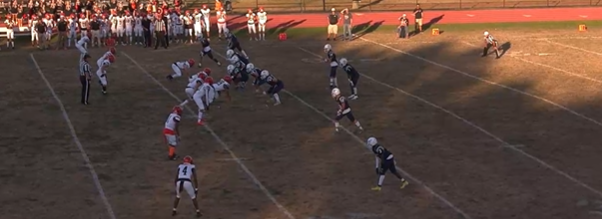
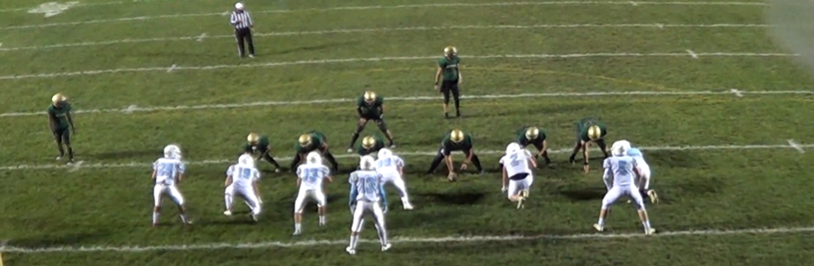

Picture of Home Game Against Boro
What would be the start of the best game of all season

Screenshot of the Patriots against Barnaget
The main offensive lineup against Barnaget

Screenshot of the Patriots against Brick Memorial
The Patriots were down by 14 in the first half...this play would seal the win for the patriots